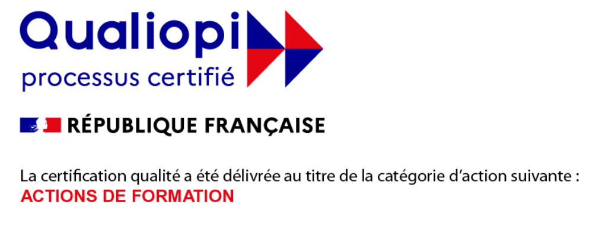

À l'issue de cette formation, les participants seront en mesure de :
Tout salarié (10 stagiaires max)
Cette formation est dispensée en présentiel uniquement, dans vos locaux ou dans notre centre à Colmar. Elle est éligible aux financements OPCO, au plan de développement des compétences et selon les cas au CPF. Nous vous accompagnons dans toutes vos démarches de financement.
Devis gratuit — Réponse sous 24h — Financement OPCO disponible
Demander un devis →Talencia Formation est certifié Qualiopi, gage de qualité reconnu par l'État, indispensable pour bénéficier des financements OPCO.
